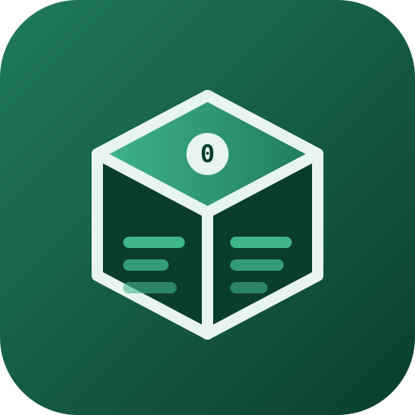

An AI coding agent is billed for what it reads, and most of what it reads is orientation, not judgement. bundlebox answers every question that a parse, a count, a path check or a set difference can answer, before the agent opens, packs the answers into a brief sized to the agent's window, opens the agent under a measured-minimal flag stack, and measures afterwards what the session used and what it was spared. It never calls a model itself, and it has no runtime dependencies.
Every figure above was measured on the reference workspace and can be regenerated with bb session, bb tokens profile --probe and bb learn episodes. Measured and estimated numbers are labelled and never added.
npm i -g bundlebox # or: curl -fsSL https://raw.githubusercontent.com/blackswanalpha/bundlebox/main/scripts/install.sh | sh
cd your-repo
bb init # detect languages, agents, gates; write .bundlebox/config.json
bb doctor # what this box can run
bb wire --apply # hooks, instruction blocks and MCP entries for every agent found
bb scan # the detectors. ~seconds, 0 tokens
bb update # later: is there a newer bundlebox| verb | answers | cost |
|---|---|---|
bb scan | what is wrong, with evidence. Sixteen detectors: doc-links, todo-census, secret-scan, big-file, merge-markers, worktree-hygiene, dead-exports, duplicate-blocks, god-file, orphan-files, dead-deps, doc-drift, lockfile-drift, stale-evidence, missing-tests, debug-leftovers | 0 |
bb findings, bb explain <id> | the store, and one finding's evidence with its triage derivation | 0 |
bb fix [--apply] | local actuators: write a patch first, then the file; decline with a reason rather than guess | 0 |
bb compile [--write] | findings → units, each packed to one window: hoisted evidence, quoted regions, prior art, acceptance command | 0 |
bb route [--write] | units → lanes: budget, file conflicts as affinity, waves, worktrees, stable session ids | 0 |
bb run [--apply] [--pr] | lanes → sessions on the chosen agent. Dry run writes the exact prompt and command first | spends |
bb git | commit, push, draft PR, review → findings, gated merge. Guards refuse force flags, root commits, secret paths, empty scope | 0 |
bb session | what a session used and saved, measured off the transcript | 0 |
bb tokens | estimate, calibrate against transcripts, probe the session overhead, prices | 0 (probe spends one turn) |
bb context <paths> | does this scope fit one session; where does it cut | 0 |
bb snapgen | fingerprinted tables: layout, symbols, routes, docs, commands, hot files, tests, deps | 0 |
bb pinpoint "<problem>" | one problem → one focused brief: where, regions, scope, evidence, done-when, traps, guidelines | 0 |
bb oversight | god files, bloat, duplication, vibe-coded marks, and the one-sentence guideline each produces | 0 |
bb pipeline run <gear> | six verbs in one process with gates and fingerprinted skips: intake, orient, measure, ops, learn, factory | 0 |
bb learn | episodes, transcript signals, rules, recommendations, process graph, model, memory, outcomes, backlog | 0 |
bb bridge | the one doorway out of free: a packed call, drafted by default, sent with --run, paid with --spend | spends only with both flags |
bb wire, bb mcp | install into agents; serve the verbs over MCP | 0 |
bb doctor, bb selftest, bb update, bb cron | what this box can run; the silent-failure checks; the updater; the unattended worker | 0 |
bb wire --apply installs, per agent detected on the box, three things: an instruction block between markers, hooks where the agent supports them, and an MCP server entry. bb wire without --apply lists every file it would touch. bb unwire removes only its own blocks.
.claude/settings.json hooks: SessionStart (table index), PreToolUse Read (range advice past 35% of the window), PreCompact, SessionEnd (the bill) · .mcp.json.codex/config.toml [mcp_servers.bundlebox].gemini/settings.json mcpServers.cursor/rules/bundlebox.mdc · .cursor/mcp.json.github/copilot-instructions.md · .vscode/mcp.jsonopencode.json mcp.clinerules/bundlebox.md.windsurf/rules/bundlebox.md.aider.conf.yml read: AGENTS.mdlanes.custom_command with {prompt_file}, {cwd}, {model}The MCP tools: bb_pinpoint, bb_context, bb_snapgen, bb_findings, bb_scan, bb_oversight_brief, bb_explain, bb_tokens_estimate, bb_session. The server is JSON-RPC 2.0 over stdio with no dependency.
projected = overhead + brief + payload × churn + reserve
overhead probed: one-turn session under the exact spawn flags, first usage block
brief the compiled instructions and evidence
payload files in scope, or the located REGION + widen × the rest when a symbol is named
churn ×2.4 measured: the file, the edited file, the linter output, the diff
reserve per kind: fix 12k · verify 8k · investigate 40k · build 8k · write 20k
FITS ≤ 78% of ceiling · TIGHT ≤ ceiling · SPLIT over, >1 file · HEAVY over, one fileFive levers, in measured order: the lean flag stack; region not file; say it once (hoisted evidence, collapsed hints); a cache-stable prefix so parallel lanes share one cache write; and, optionally, a local compression proxy on the wire, reported on its own row with its own denominator.
| row | how it is known |
|---|---|
| used | MEASURED to the token from the transcript, deduplicated by message id; cost from a price table with a source and date |
| saved · cache | MEASURED: those exact tokens billed at the cache-read discount |
| saved · wire | MEASURED from the proxy's own counters when it is up; n/a otherwise |
| saved · automation | ESTIMATE, printed as a range: turns displaced × this session's marginal-to-full per-turn cost |
A model with no price is reported with tokens and no cost. A verb that could not look says unknown. A unit with no acceptance is unproven and is not shipped.
One file, .bundlebox/config.json, holding only the keys you changed. Every default is in src/core/config.js with the reason next to it. Measured values (calibration, probed overhead) live in .bundlebox/var/calibration.json and are written by read-merge, never clobbered.
{
"lanes": { "agent": "claude", "max_parallel": 4, "model": "sonnet", "daily_budget_usd": 20 },
"budget": { "max_tokens": 160000, "churn_factor": 2.4, "anchor_widen": 0.45 },
"kernel": { "gates": { ".": { "quick": "npm test", "full": "npm run lint && npm test" } } },
"detectors": { "promote_at": "medium" },
"headroom": { "enabled": false }
}Tags vX.Y.Z on main publish to npm with provenance and create a GitHub release whose body is changelogs/vX.Y.Z.md. bb update checks the registry at most once a day and installs with --apply. The installer script refuses sudo and prints the two commands that make the global prefix writable.